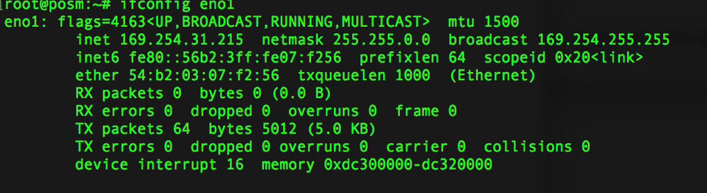

OpenDroneMap distributed processing¶
Todo
This section is being edited and updated. Please let us know if you find any errors or omissions.
As of the 0.9.0 release of POSM, it is possible to leverage ClusterODM and two or more networked devices to distribute a large dataset split into chunks across multiple processing nodes.
Setting up¶
You’ll want more powerful hardware. We suggest either the Intel NUC NUC6i7KYK or the NUC8i7BEH1 with a 500 GB SSD and 32 GB RAM.
Install the SuperPOSM variant on one NUC, and the POSM AUX variant on the other(s).
Power down all the POSMs and connect them together via a switch or router. (Note that some routers have port 1 configured as a management port, and attempting to use it without adjusting the default router settings may fail.)
Power up the SuperPOSM first. Once it is up and running, connect to its wifi and check that WebODM has started and you can successfully reach the interface.
See what nodes are connected and working by opening http://webodm.posm:20000. It will bring up a UI that shows the connected nodes. We know it’s port 20000 from the
--admin-web-port 20000parameter setting in/kickstart/etc/systemd/system/clusterodm.service.hbs(link to file).Click “Enable Auto Refresh” and then power up the AUX node(s) one at a time. They should automatically self register. If you wait for each node to appear in the list before powering on the next one, you can take note of its IP address. Writing it on a piece of tape stuck to the POSM can help with troubleshooting later.
Alternatively to see what’s connected and the status, connect to the SuperPOSM’s wifi and then type
nc posm.io 28080and thenNODE LISTConnect to the SuperPOSM wifi and then ssh into the device. For example by using
ssh root@posm.localand enteringposmas a password when prompted. Check the network settings withifconfig eno1and there should be a line withinetand an IP address. Go back to the WebODM interface and in the “Processing Nodes” menu, edit the “Cluster” entry by changing “Hostname” fromlocalhostto the the IP address (169.254.31.215in the screengrab below).You should now be ready to process an image set.
Processing¶
- Set the processing node to “Cluster”.
- Setting “split” to
400and “split-overlap” to120are conservative values and a good starting point (if running on the hardware recommended above). - For challenging image sets (for example, lots of similar looking vegetation), you might try increasing the “min-num-features” but if good results aren’t achieved with
12,000then the problem could be elsewhere. - Once a task starts, you should be able to see
[INFO] sm_cluster: Truein the first lines of the log. If it’s set toNonethen the cluster processing isn’t working correctly.
Troubleshooting¶
Connect to a node¶
- Option 1: Attach a monitor and keyboard to the AUX node POSM
- Option 2: Connect via the SuperPOSM wifi
-
ssh root@posm.localthen enterposmfor the password when prompted - Now jump from the SuperPOSM to the AUX node withssh root@192.168.88.253(Replace with the node’s address. Did you record the IP addresses as you powered up the AUX nodes?)
Mount a USB to copy files off a node¶
- Connect to the node
- Attach a USB drive
- Try one of these to find the USB drive name:
lsblkorsudo blkidorsudo fdisk -l - Create a folder, for example
sudo mkdir /usb - Mount the USB drive using
sudo mount /dev/sdb1 /usb` where ``sdb1is the name of the USB drive - Copy files to the folder
- When you’re done, disconnect the USB drive with
sudo umount /usb
Copy files off a node using the public folder¶
- Connect to the node
- Enter the running docker container
- Copy the file using
cp file /var/www/public - Access the file via the NodeODM public port: http://ipofnodeodm:3000/file
Get logs of the NodeODM or ClusterODM worker processes¶
- Connect to the node
- Mount a USB to copy files off a node
- Run
journalctl -u webodm > ./usb/webodm_log.txtorjournalctl -u nodeodm > ./usb/nodeodm_log.txt(where./usbis the folder created and used to mount the USB)
Change NodeODM startup settings¶
- Edit
/etc/systemd/system/nodeodm.service - Run
systemctl daemon-reloadto reload the config - Restart NodeODM with the new options using
systemctl restart nodeodm
Other useful commands¶
- Check network settings
-
ifconfig eno1 - Manually trigger the AUX node registration process
-
/usr/local/bin/register-nodeodm-worker.sh